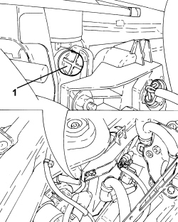
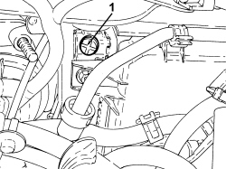
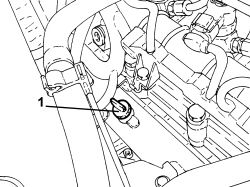
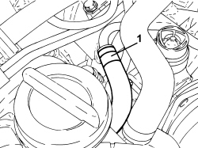
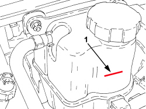

- Close the tap on the radiator used for draining the circuit.
1. Open the bleed valve on the return pipe from the radiator.

1. Open the bleed valve on the top left part of the radiator.
1. Open the bleed valve on the rigid return pipe to the water pump.
- Slowly introduce the recommended fluid into the circuit via the filler on the engine coolant supply reservoir keeping the level above the MAX reference until fluid comes out of the bleeds opened previously, then close the bleed screws.
Component
Type
Description
Classification
Qty.
Validity
ENGINE COOLING CIRCUIT
Fluid [I]
Mixture of 50% PARAFLU UP/demineralised water
Contractual Technical
Reference
N. F101.M01
CUNA NC 956-16 - ASTM D 3306 - FIAT 9.55523
7.35
2.4 JTD 20V
- Complete the introduction of engine coolant until the MAX reference on the reservoir is reached.
1. Loosen the band (1a), disconnect the degassign pipe (1b) and introduce it directly into the engine coolant reservoir filler.
- Start up the engine and let it idle for about 2 minutes.
- Later on, accelerate and make sure that the water is circulating in the circuit; this can be ascertained by the presence of a jet of water coming from the degassing pipe submerged in the reservoir.
- If the water is not circulating, repeat the bleeding operations using the dedicated screws described previously.
- At the same time top up the fluid, if necessary, to the MAX reference.
- Restore the connection for the degassing pipe on the reservoir and tighten the band.
- Fit the engine coolant reservoir cap and tighten.
- Then accelerate gradually and periodically (about every 30 seconds) until a speed of 3500 rpm is reached. Repeat this operation until the fan cuts in for about three times.
During this operation keep the climate control system switched off to prevent the fan from coming on for reasons unconnected to the heating of the coolant.
- If the level in the reservoir drops considerably during this stage, restore the engine idle speed and open the filler cap very carefully and top up to the MAX level; then close the cap completely and finish the bleeding of the air from the engine cooling system.
- Stop the engine for around 1 minute and wait for any air bubbles from the thermostat to rise towards the engine coolant reservoir.
- Start the engine again and carry out another cycle of accelerations and fan engagements.
- Stop the engine and wait for a sufficient drop in the engine coolant temperature.
- After the above operations, check the fluid level in the reservoir and top up to the MAX notch on the reservoir if necessary.
- At the end of the above operations, make sure that the amount of fluid introduced into the system is at least equal to the amount collected during the draining stage.
- Close the tap on the radiator used for draining the circuit.
1. Open the bleed valve on the return pipe from the radiator.
APPLICABLE TO VERSIONS WITH: C.A.E.

1. Open the bleed valve on the top left part of the radiator.
APPLICABLE TO VERSIONS WITH: C.A.E.

1. Open the bleed valve on the rigid return pipe to the water pump.
APPLICABLE TO VERSIONS WITH: C.A.E.

1. Loosen the band and disconnect the flexible pipe from the rigid breather pipe and blow through with compressed air to release it from the residual fluid; then restore the connection.
APPLICABLE TO VERSIONS WITH: C.A.E.

1. Slowly introduce the recommended fluid into the circuit via the filler on the engine coolant supply reservoir until fluid comes out of the bleeds opened previously, then close the bleed screws. Complete the filling until the fluid level is about 50 mm above the MAX reference on the supply reservoir and tighten the filler cap.
Component
Type
Description
Classification
Qty.
Validity
ENGINE COOLING CIRCUIT
Fluid [I]
Mixture of 50% PARAFLU UP/demineralised water
Contractual Technical
Reference
N. F101.M01
CUNA NC 956-16 - ASTM D 3306 - FIAT 9.55523
7.35
2.4 JTD 20V
APPLICABLE TO VERSIONS WITH: C.A.E.
- Start up the engine and let it idle for about 2 minutes.
- In the meantime carry out any topping up to the above mentioned position (50 mm above the MAX reference).
- Then carry out gradual, periodic accelerations (every 30 secs.) until the engine speed is 4000 rpm. This operation should be carried out until the thermostat opens and the fan switches on and off at least 3 times. During this operation keep the climate control system switched off to prevent the fan from coming on for reasons unconnected to the heating of the engine coolant. If there is a noticeable drop in the level (below the MIN reference) during this stage, let the engine idle and open the cap very carefully, topping up the fluid to the MAX level, then close the cap fully and remove all the air from the system.
- Stop the engine and wait until the circuit has cooled down sufficiently.
- Check that the radiator has been bled by loosening the special bleed screw. Close the bleed screw when water comes out.
- After the above operations, check the fluid level in the reservoir and top up to the MAX notch on the reservoir if necessary.
- At the end of the above operations, make sure that the amount of fluid introduced into the system is at least equal to the amount collected during the draining stage.